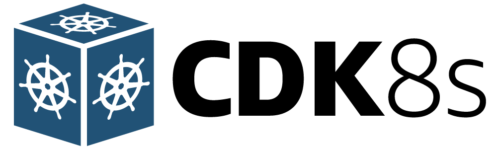
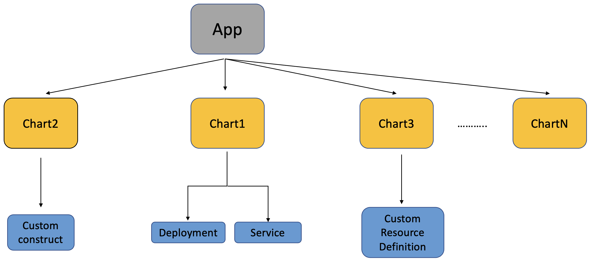
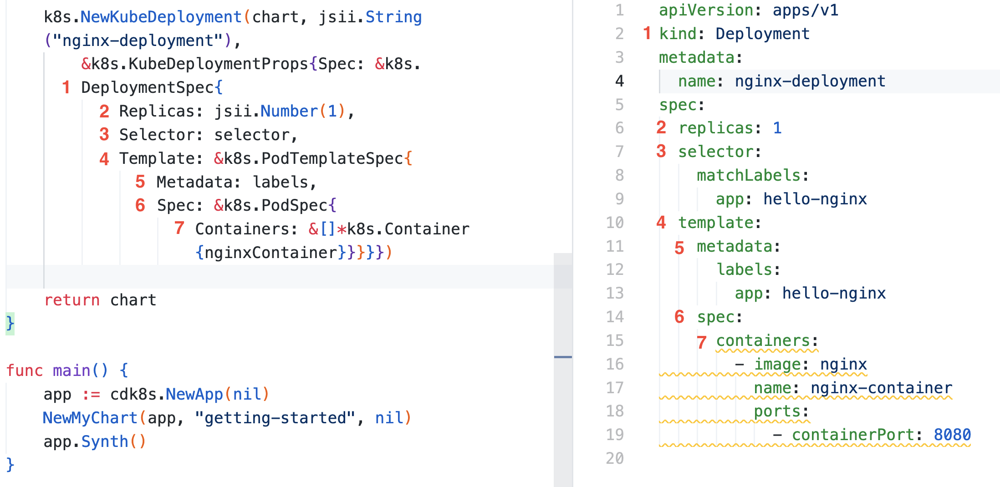

Getting started with cdk8s

This chapter will start things off and provide a gentle yet hands-on intro to cdk8s. By the end of it, you will be familiar with the key concepts and understand how to use cdk8s Go APIs to define a Kubernetes application, deploy (using kubectl) and test it out.
Before you begin...
Make sure you have Go (v1.16 or above) and cdk8s CLI installed. Also, you need to have access to a Kubernetes cluster. For learning and experimentation I would recommend using a single-node cluster running locally - such as minikube, kind, etc.
I generally use
minikube, so setting up a cluster is as simple asminikube start
To install cdk8s CLI
You can choose from the below options:
#homebrew
brew install cdk8s
#npm
npm install -g cdk8s-cli
#yarn
yarn global add cdk8s-cli
Alright, lets get started!
Although this chapter will provide step-by-step instructions, you can always refer to the complete code on Github
cdk8s makes it really easy for you get started and bootstrap your application. You don't need to guess and figure out how to structure your project, setup dependencies etc. since the cdk8s init command does it for you!
cdk8s init go-app
#output
....
Your cdk8s Go project is ready!
cat help Prints this message
cdk8s synth Synthesize k8s manifests to dist/
cdk8s import Imports k8s API objects to "imports/k8s"
Deploy:
kubectl apply -f dist/
Once completed, you will get a directory structure as such:
.
├── cdk8s.yaml
├── dist
│ └── test.k8s.yaml
├── go.mod
├── go.sum
├── help
├── imports
│ └── k8s
│ ├── internal
│ │ └── types.go
│ ├── jsii
│ │ ├── jsii.go
│ │ └── k8s-0.0.0.tgz
│ ├── k8s.go
│ ├── k8s.init.go
│ └── version
└── main.go
Update the generate go.mod file, and replace it with the following - this is to make things simpler for you.
Feel free to use the latest version of the modules if needed.
module getting-started-with-cdk8s-go
go 1.16
require (
github.com/aws/constructs-go/constructs/v10 v10.1.42
github.com/aws/jsii-runtime-go v1.60.1
github.com/cdk8s-team/cdk8s-core-go/cdk8s/v2 v2.3.29
)
You're all set to write some write some Go code!
The canonical Kubernetes "hello world" is to get a nginx server up and running. The easiest option is to use simply use kubectl run e.g. kubectl run nginx --image=nginx. But, since this is imperative, we switch to a declarative way where we define our desired state (in a yaml file) and ask Kubernetes to figure things out.
For e.g. we can write a Deployment manifest and submit it to Kubernetes using kubectl apply -f <name of the yaml file>.
apiVersion: apps/v1
kind: Deployment
metadata:
name: nginx-deployment
spec:
replicas: 1
selector:
matchLabels:
app: hello-nginx
template:
metadata:
labels:
app: hello-nginx
spec:
containers:
- image: nginx
name: nginx-container
ports:
- containerPort: 8080
But we are here to minimise yaml...
So, open the main.go file and copy the below Go code. Don't worry, I will walk you through it!
package main
import (
"getting-started-with-cdk8s-go/imports/k8s"
"github.com/aws/constructs-go/constructs/v10"
"github.com/aws/jsii-runtime-go"
"github.com/cdk8s-team/cdk8s-core-go/cdk8s/v2"
)
type NginxChartProps struct {
cdk8s.ChartProps
}
func NewNginxChart(scope constructs.Construct, id string, props *NginxChartProps) cdk8s.Chart {
var cprops cdk8s.ChartProps
if props != nil {
cprops = props.ChartProps
}
chart := cdk8s.NewChart(scope, jsii.String(id), &cprops)
selector := &k8s.LabelSelector{MatchLabels: &map[string]*string{"app": jsii.String("hello-nginx")}}
labels := &k8s.ObjectMeta{Labels: &map[string]*string{"app": jsii.String("hello-nginx")}}
nginxContainer := &k8s.Container{Name: jsii.String("nginx-container"), Image: jsii.String("nginx"), Ports: &[]*k8s.ContainerPort{{ContainerPort: jsii.Number(80)}}}
k8s.NewKubeDeployment(chart, jsii.String("deployment"),
&k8s.KubeDeploymentProps{
Spec: &k8s.DeploymentSpec{
Replicas: jsii.Number(1),
Selector: selector,
Template: &k8s.PodTemplateSpec{
Metadata: labels,
Spec: &k8s.PodSpec{
Containers: &[]*k8s.Container{nginxContainer}}}}})
return chart
}
func main() {
app := cdk8s.NewApp(nil)
NewNginxChart(app, "nginx", nil)
app.Synth()
}
When writing cdk8s based code in any language, you will come across a set of common concepts/terminologies - these include Construct, App and Chart. I will explain these as we walk through the code.
Slight detour (code walk-through and concepts)
Start with the main function first - we use cdk8s.NewApp to create an App.
Well, what exactly in an App? It's is a construct, and you can think of constructs as higher-level building blocks to represent state. The key thing to note is that these constructs are composable. What that means is that you can define levels of these constructs (each level provides/exposes a different abstraction layer) and combine them to create your desired end state - in this case it happens to be a Kubernetes manifest with objects such as Deployment, but it could be something else.
For e.g. an AWS CloudFormation template (if you were to use AWS CDK, not be confused with
cdk8s)
Back to the App - so, an App is also a construct. In fact you can think of it as the root in a tree (hierarchy) of constructs. So what else is there in that tree? Look the second line in the main function - NewNginxChart(app, "getting-started", nil) - this invokes a function NewNginxChart that returns a cdk8s.Chart which is the next component in the hierarchy. AA cdk8s App can contain multiple charts and each chart can be converted (or in precise cdk8s terminology - synthesized) into a separate Kubernetes manifest file (you will see this action very soon).
Finally, draw your attention to the NewNginxChart function. It has a bunch of things, but notice the call to k8s.NewKubeDeployment function. This is where we actually define a Kubernetes Deployment in code (in the next section, we will also add a Service to the chart.)
You can define multiple Kubernetes components in a chart, such a
Pod,Service,Ingress,Jobetc. - what ever you need for your application to work on Kubernetes.
To summarise, here is a visual representation of what I just explained - remember everything is a Construct (App, Chart etc.)

Wait, what about the Kubernetes API dependencies??
If you've spent time working on accessing Kubernetes programmatically, this is an obvious (and great!) question. if you were to deal with k8s object using go, at the minimum you will need Kubernetes client-go, API machinery etc. Guess what, cdk8s has got you covered there too!
You actually don't need to pull in these dependencies because cdk8s allows you to treat these Kubernetes API Objects as constructs - remember, everything is s construct! They are automatically imported to your project when you run the cdk8s init command, but you can do it explicitly using cdk8s import as well. The resulting API is available as part of the imports folder (yes, go ahead and check that again!). On the top of main.go, check the package that is imported - its just refers to the imports folder.
There is more to
cdk8s importthough. More to come in the chapters to follow!
Alright, lets get back on track...
.. and continue with the practical bits. It's time to generate some yaml - you can't eliminate it, but at least you don't have to write it by hand! To do so, simply run:
cdk8s synth
Once that completes (should be quick!), check the dist directory to check what cdk8s has generated.
To make it easier to understand, here is a diagram which has a one-to-one mapping (notice the labels 1, 2,3, etc.?) between the the cdk8s code objects/properties to their respective counterparts in yaml e.g. spec.replicas, spec.selector, template.spec etc.

You can now use good old kubectl to deploy this to Kubernetes since cdk8s is not going to do that for you, at least not yet ;)
kubectl apply -f dist/
kubectl get pods -w
Once the Deployment is ready, the Pod should be in Running state. Simply use port-forward to access the nginx container port locally:
kubectl port-forward <enter nginx pod name> 8080:80
To access nginx home page, navigate to http://localhost:8080 using your browser
You also use a CLI tool e.g.
curl localhost:8080.
That's not all!
Instead of port forwarding, let's use the standard Kubernetes way of accessing applications by defining a Service resource, which is typically defined like this:
apiVersion: v1
kind: Service
metadata:
name: nginx-service
spec:
ports:
- port: 9090
targetPort: 8080
selector:
app: hello-nginx
type: LoadBalancer
But you know the rule - no yaml writing by hand! So, in the NewNginxChart function in the main.go file, add this piece of code after the part you defined the Deployment:
k8s.NewKubeService(chart, jsii.String("service"), &k8s.KubeServiceProps{
Spec: &k8s.ServiceSpec{
Type: jsii.String("LoadBalancer"),
Ports: &[]*k8s.ServicePort{{Port: jsii.Number(9090), TargetPort: k8s.IntOrString_FromNumber(jsii.Number(80))}},
Selector: &map[string]*string{"app": jsii.String("hello-nginx")}}})
First, delete the existing Deployment - kubectl delete -f dist/. Then, run cdk8s synth again to create the new manifest in the dist folder.
Both the
ServiceandDeploymentare in the same file - this is because they are part of the same Chart.
How you access the service will depend on the Kubernetes cluster. If you are using a cloud provider, it will likely provision a Load Balancer service native to that cloud e.g. Application Load Balancer in AWS. Please adjust this as per your setup.
For
minikube, you can simply follow these instructions https://minikube.sigs.k8s.io/docs/handbook/accessing/#loadbalancer-access - "Services of type LoadBalancer can be exposed via theminikube tunnelcommand."
In a terminal, run this command (it runs as a separate process):
minikube tunnel
In another terminal, delete the existing Deployment and then apply the new manifest:
kubectl apply -f dist/
kubectl get pods -w
Check the Service:
kubectl get svc
To access the nginx server, navigate to the external IP (as per the Service). In the case of minikube, you can simply use localhost:9090 or 127.0.0.0:9090
Remember to use port
9090since that's the external port we specified in the Service configuration in our code
Before wrapping up...
.. I want to call out a couple of other useful things in cdk8s.
Reference and reuse existing manifests and Helm charts
Say you have a Service already defined in a service.yaml file. You can include it in your cdk8s as part of a larger application/chart that you may have. Here is an example:
cdk8s.NewInclude(chart, jsii.String("existing service"), &cdk8s.IncludeProps{Url: jsii.String("service.yaml")})
Similarly, you can also include Helm charts. Say you wanted to add bitnami/nginx:
cdk8s.NewHelm(chart, jsii.String("bitnami nginx helm chart"), &cdk8s.HelmProps{
Chart: jsii.String("bitnami/nginx"),
Values: &map[string]interface{}{"service.type": "ClusterIP"}})
Well, you do need to have
helminstalled locally and also add the repo firsthelm repo add bitnami https://charts.bitnami.com/bitnami
Another handy feature is...
... the ability to declare dependencies between any two cdk8s constructs. For instance, in the previous example, we had a Deployment and a Service. You could create a dependency as such:
deployment := k8s.NewKubeDeployment(...)
service := k8s.NewKubeService(...)
deployment.AddDependency(service)
Thanks to AddDependency, the resulting manifest will be such that the Service is placed before the Deployment object.
Dependency is not limited to individual constructs in a chart. If you have multiple charts as part of your
cdk8sapp, you can establish dependencies across charts as well.
Conclusion
Awesome. So you were able to "code" your way through trouble and ignore YAML. Hope you enjoyed it! To keep things simple, I demonstrated a Deployment and Service, but you can choose from other Kubernetes components such as Ingress, Job etc. They are all exposed using a similar pattern i.e. NewKubeNewKubeJob, NewKubeIngress etc.
But there is still a lot of boilerplate code involved in defining Kubernetes components. Writing Go code sounds way better than YAML engineering (at least to me), it seems as if we are translating existing YAML into Go structs (and fields). In the next chapter, we will explore how to improve this further.